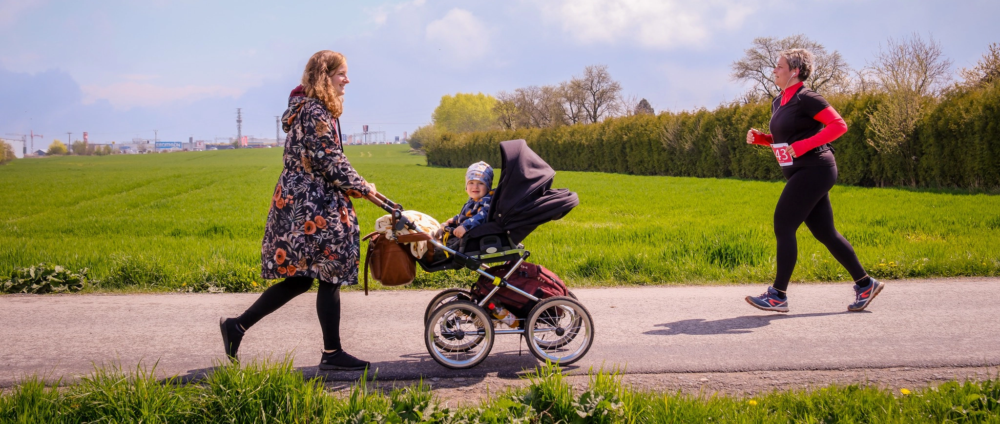
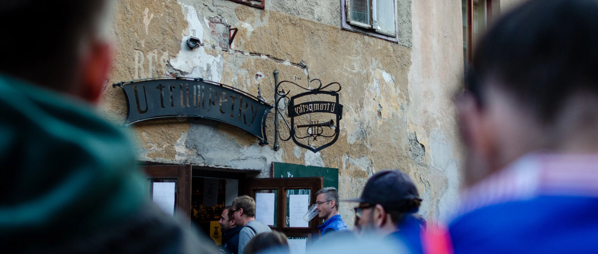

Program
- 9:00 začátek vyzvedávání startovních čísel
10:30 konec vyzvedávání startovních čísel
11:00 start Halahoj Třebíčského půlmaratonu
11:05 start nesoutěžního běhu rodičů s dětmi
11:40 předpokládaný doběh vítěze „Desítky“
12:15 předpokládaný doběh vítěze půlmaratonu
13:30 vyhlášení výsledků
17:00 Půlmaratonský festiválek na Trumpetce

Nesoutěžní běh rodičů s dětmi
Start: okamžitě po závodu dospělých (cca 11:05)
Délka: cca 1,5 km
Vstupné: dobrovolné
Nesoutěžní běh rodičů s dětmi je určený pro celé rodiny a vyhraje každý, kdo se na trať dlouhou 1,5 kilometrů vypraví. Pořadí v cíli rozhodující není, „závod“ tak můžete pojmout jako rodinnou procházku klidně i těmi nejmenšími v kočárku. Na každého malého účastníka pak bude v cíli čekat drobná odměna.

Peču s půlmaratonem
Text

Staň se dobrovolníkem
Necítíš se na běh, ale chceš strávit fajnové dopoledne? Můžeš se stát pomocníkem s přípravou a průběhem závodu.
Čím se ti odvděčíme? Za pomoc od nás dostaneš pořadatelské tričko, svačinu a pití. Navíc dostaneš poukaz na pivo nebo limonádu na večerním festiválku.
Jak se stát dobrovolníkem? Je to jednoduché! Kontaktuj Onderi (našeho koordinátora dobrovolníků) ondrej.herzan@gmail.com a domluv se s ním, kde bys chtěl pomáhat.

Půlmaratonský festiválek
Odpoledne se můžete těšit na...
Vstupné je dobrovolné